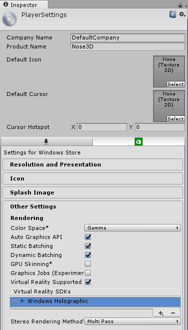

The keynote is at a VR conference so we need a VR demo showing our Nose Prototypes. Having our 3D UWP app from 5.1.2a we can easily turn this into a VR enabled app.
This walkthrough assumes that you have:
Supporting Mixed Reality in Unity is just a simple toggle on the Build Settings in Unity.
Click Other Settings to reveal a new set of properties.
Tick the Virtual Reality Supported checkbox. Windows Holographic should appear automatically.

Export the project again, replacing the Folder you exported to in 5.1.2a.
Note: Connecting a new VR headset requires the latest Windows 10 build. Windows will automatically detect the headset and launch the Mixed Reality portal. Follow the configuration steps here to set it up correctly.